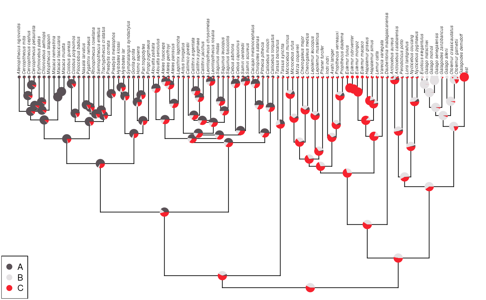

library(phytools)
#> Loading required package: ape
#> Loading required package: maps
library(dplyr)
#>
#> Attaching package: 'dplyr'
#> The following object is masked from 'package:ape':
#>
#> where
#> The following objects are masked from 'package:stats':
#>
#> filter, lag
#> The following objects are masked from 'package:base':
#>
#> intersect, setdiff, setequal, union
library(tidyr)
library(tibble)
library(purrr)
#>
#> Attaching package: 'purrr'
#> The following object is masked from 'package:maps':
#>
#> map
data('primate.tree')
data('primate.data')
tre <- primate.tree
dat <- primate.data
states_original <- dat |>
rownames_to_column(var = 'tip_label') |>
select(tip_label, Activity_pattern) |>
mutate(presence = 1) |>
pivot_wider(
names_from = 'Activity_pattern', values_from = 'presence', values_fill = 0
) |>
column_to_rownames(var = 'tip_label') |>
set_names(c('A', 'B', 'C')) |>
as.matrix()
tip_number <- which(tre$tip.label == 'Galagoides_demidoff')
x <- bind.tip(tree = tre, tip.label = 'test', edge.length = 1000, where = tip_number)
tip_number <- which(x$tip.label == 'Galagoides_demidoff')
tip_number2 <- which(x$tip.label == 'test')
x$edge[which(x$edge[,2] == tip_number),]
#> [1] 181 90
x$edge[which(x$edge[,2] == tip_number2),]
#> [1] 181 91
x$edge.length[which(x$edge[,2] == tip_number)] <- 1e-06
x$edge.length[which(x$edge[,2] == tip_number2)] <- 1e-06
x$edge.length
#> [1] 4.1629853 22.0282113 16.8118208 8.5896259 6.5351962 2.9802761
#> [7] 11.8949024 0.4017889 1.6449876 3.4189167 6.4292093 3.6975727
#> [13] 2.7316365 2.7316365 1.2208814 8.6272445 8.6272445 11.4931135
#> [19] 7.9971830 6.8779955 1.8320175 5.0459780 5.0459780 5.9752171
#> [25] 2.8977056 10.2306840 2.3067680 2.3067680 12.5374520 2.1270555
#> [31] 0.5234549 2.3100632 0.8397710 9.6348130 9.6348130 10.4745840
#> [37] 1.3232697 11.4613775 11.4613775 7.5298911 5.7782110 5.7782110
#> [43] 10.3940551 13.0075840 3.0693955 3.5289660 3.5289660 6.5983615
#> [49] 4.4734907 6.4802221 8.6522327 2.4763532 6.1758795 6.1758795
#> [55] 15.1324548 24.0790430 1.4114783 6.5610599 10.8720238 3.8882165
#> [61] 3.8882165 5.6128493 6.4669160 1.1871140 1.4933610 1.4933610
#> [67] 2.6804750 9.1473910 1.2287728 0.6050065 19.4875208 3.7752691
#> [73] 0.6821871 1.7974371 13.2326275 6.2034975 2.2393180 4.7898120
#> [79] 4.7898120 7.0291300 13.5760746 1.4539900 1.4539900 3.9861107
#> [85] 3.3647150 8.3614260 8.3614260 11.7261410 1.5226224 16.3400050
#> [91] 2.2299000 2.2299000 17.1669620 1.4029430 1.4029430 3.3366907
#> [97] 9.7532088 7.3688510 2.2740280 2.2740280 9.6428790 8.9155682
#> [103] 10.4805195 10.4805195 52.5257567 16.3142760 16.3142760 10.2664653
#> [109] 11.6124877 17.8593489 2.3188111 2.5168100 5.8657060 8.2922660
#> [115] 8.2880970 5.9830260 5.9830260 14.2711230 11.1752500 11.3881390
#> [121] 11.3881390 2.7400710 12.3396710 13.3493530 13.3493530 25.6890240
#> [127] 10.0368730 20.9090320 4.4064320 16.5026000 9.9470460 6.5555540
#> [133] 6.5555540 12.7219140 5.5232059 9.8241958 1.0416962 0.3615277
#> [139] 3.7921765 3.7921765 4.1537042 5.1954005 5.7390790 1.0796788
#> [145] 8.2008385 8.2008385 9.2805173 20.5428021 51.1240650 24.7365524
#> [151] 3.3647443 15.9007062 17.7823070 0.9522430 0.9522430 18.7345500
#> [157] 10.5777289 24.0575272 15.5512808 8.5062465 8.5062465 20.8688150
#> [163] 3.7667676 2.8386112 5.1413055 2.8721390 2.5123620 2.5123620
#> [169] 4.1897910 1.1947100 1.1947100 10.5258065 4.9581152 8.4063025
#> [175] 7.5723535 0.8339490 0.8339490 17.1311854 0.0000010 0.0000010
m <- states_original
m[] <- 1 / ncol(m)
# m['Galagoides_demidoff', ] <- c(A = 1, B = 0, C = 0)
m <- rbind(m, c(A = 0, B = 0, C = 1))
rownames(m)[nrow(m)] <- 'test'
macaca <- grep('^Macaca_', rownames(m)) # ?
galago <- grep('^Galago_', rownames(m)) # B
eulemur <- grep('^Eulemur', rownames(m)) # C
m[macaca, ] <- c(rep(1,3), rep(0, 6))
m[galago, ] <- c(rep(0,4), rep(1, 4), rep(0, 4))
m[eulemur, ] <- c(rep(0,8), rep(1, 4))
myMod <- 'ARD'
myPi <- 'fitzjohn'
fit <- fitMk(
tree = x, x = m, model = myMod, pi = myPi, lik.func = "pruning",
logscale = TRUE
)
ace <- ancr(fit, tips=TRUE)
plot(ace, args.plotTree = list(direction = "upwards"))
sessioninfo::session_info()
#> - Session info ---------------------------------------------------------------
#> setting value
#> version R version 4.4.0 (2024-04-24)
#> os Ubuntu 22.04.4 LTS
#> system x86_64, linux-gnu
#> ui X11
#> language en
#> collate C
#> ctype C
#> tz Etc/UTC
#> date 2024-05-09
#> pandoc 3.1.13 @ /usr/bin/ (via rmarkdown)
#>
#> - Packages -------------------------------------------------------------------
#> package * version date (UTC) lib source
#> ape * 5.8 2024-04-11 [1] RSPM (R 4.4.0)
#> bslib 0.7.0 2024-03-29 [1] RSPM (R 4.4.0)
#> cachem 1.0.8 2023-05-01 [1] RSPM (R 4.4.0)
#> cli 3.6.2 2023-12-11 [1] RSPM (R 4.4.0)
#> clusterGeneration 1.3.8 2023-08-16 [1] CRAN (R 4.4.0)
#> coda 0.19-4.1 2024-01-31 [1] CRAN (R 4.4.0)
#> codetools 0.2-20 2024-03-31 [2] CRAN (R 4.4.0)
#> combinat 0.0-8 2012-10-29 [1] CRAN (R 4.4.0)
#> desc 1.4.3 2023-12-10 [1] RSPM (R 4.4.0)
#> digest 0.6.35 2024-03-11 [1] RSPM (R 4.4.0)
#> doParallel 1.0.17 2022-02-07 [1] CRAN (R 4.4.0)
#> dplyr * 1.1.4 2023-11-17 [1] CRAN (R 4.4.0)
#> evaluate 0.23 2023-11-01 [1] RSPM (R 4.4.0)
#> expm 0.999-9 2024-01-11 [1] CRAN (R 4.4.0)
#> fansi 1.0.6 2023-12-08 [1] RSPM (R 4.4.0)
#> fastmap 1.1.1 2023-02-24 [1] RSPM (R 4.4.0)
#> fastmatch 1.1-4 2023-08-18 [1] CRAN (R 4.4.0)
#> foreach 1.5.2 2022-02-02 [1] CRAN (R 4.4.0)
#> fs 1.6.4 2024-04-25 [1] RSPM (R 4.4.0)
#> generics 0.1.3 2022-07-05 [1] CRAN (R 4.4.0)
#> glue 1.7.0 2024-01-09 [1] RSPM (R 4.4.0)
#> highr 0.10 2022-12-22 [1] RSPM (R 4.4.0)
#> htmltools 0.5.8.1 2024-04-04 [1] RSPM (R 4.4.0)
#> htmlwidgets 1.6.4 2023-12-06 [1] RSPM (R 4.4.0)
#> igraph 2.0.3 2024-03-13 [1] RSPM (R 4.4.0)
#> iterators 1.0.14 2022-02-05 [1] CRAN (R 4.4.0)
#> jquerylib 0.1.4 2021-04-26 [1] RSPM (R 4.4.0)
#> jsonlite 1.8.8 2023-12-04 [1] RSPM (R 4.4.0)
#> knitr 1.46 2024-04-06 [1] RSPM (R 4.4.0)
#> lattice 0.22-6 2024-03-20 [2] CRAN (R 4.4.0)
#> lifecycle 1.0.4 2023-11-07 [1] RSPM (R 4.4.0)
#> magrittr 2.0.3 2022-03-30 [1] RSPM (R 4.4.0)
#> maps * 3.4.2 2023-12-15 [1] CRAN (R 4.4.0)
#> MASS 7.3-60.2 2024-04-30 [2] local
#> Matrix 1.7-0 2024-03-22 [2] CRAN (R 4.4.0)
#> memoise 2.0.1 2021-11-26 [1] RSPM (R 4.4.0)
#> mnormt 2.1.1 2022-09-26 [1] CRAN (R 4.4.0)
#> nlme 3.1-164 2023-11-27 [2] CRAN (R 4.4.0)
#> numDeriv 2016.8-1.1 2019-06-06 [1] CRAN (R 4.4.0)
#> optimParallel 1.0-2 2021-02-11 [1] CRAN (R 4.4.0)
#> phangorn 2.11.1 2023-01-23 [1] CRAN (R 4.4.0)
#> phytools * 2.1-1 2024-01-09 [1] CRAN (R 4.4.0)
#> pillar 1.9.0 2023-03-22 [1] RSPM (R 4.4.0)
#> pkgconfig 2.0.3 2019-09-22 [1] RSPM (R 4.4.0)
#> pkgdown 2.0.9 2024-04-18 [1] RSPM (R 4.4.0)
#> purrr * 1.0.2 2023-08-10 [1] RSPM (R 4.4.0)
#> quadprog 1.5-8 2019-11-20 [1] CRAN (R 4.4.0)
#> R6 2.5.1 2021-08-19 [1] RSPM (R 4.4.0)
#> ragg 1.3.0 2024-03-13 [1] RSPM (R 4.4.0)
#> Rcpp 1.0.12 2024-01-09 [1] RSPM (R 4.4.0)
#> rlang 1.1.3 2024-01-10 [1] RSPM (R 4.4.0)
#> rmarkdown 2.26 2024-03-05 [1] RSPM (R 4.4.0)
#> sass 0.4.9 2024-03-15 [1] RSPM (R 4.4.0)
#> scatterplot3d 0.3-44 2023-05-05 [1] CRAN (R 4.4.0)
#> sessioninfo 1.2.2 2021-12-06 [1] RSPM (R 4.4.0)
#> systemfonts 1.0.6 2024-03-07 [1] RSPM (R 4.4.0)
#> textshaping 0.3.7 2023-10-09 [1] RSPM (R 4.4.0)
#> tibble * 3.2.1 2023-03-20 [1] RSPM (R 4.4.0)
#> tidyr * 1.3.1 2024-01-24 [1] CRAN (R 4.4.0)
#> tidyselect 1.2.1 2024-03-11 [1] RSPM (R 4.4.0)
#> utf8 1.2.4 2023-10-22 [1] RSPM (R 4.4.0)
#> vctrs 0.6.5 2023-12-01 [1] RSPM (R 4.4.0)
#> withr 3.0.0 2024-01-16 [1] RSPM (R 4.4.0)
#> xfun 0.43 2024-03-25 [1] RSPM (R 4.4.0)
#> yaml 2.3.8 2023-12-11 [1] RSPM (R 4.4.0)
#>
#> [1] /usr/local/lib/R/site-library
#> [2] /usr/local/lib/R/library
#>
#> ------------------------------------------------------------------------------